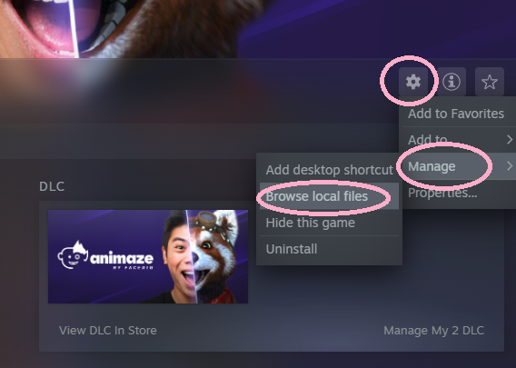
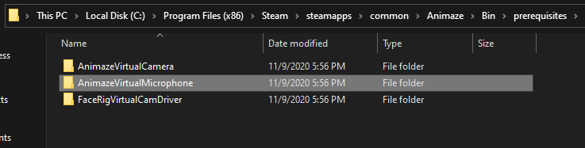
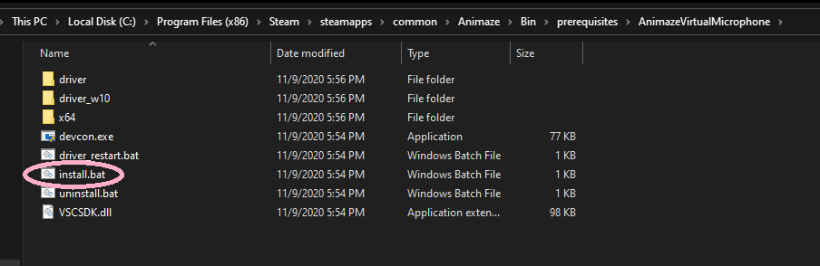

Animaze Desktop: How can I install the Animaze Virtual Microphone?
In order to install the Animaze Virtual Microphone, keep the Animaze app closed throughout the entire process. If Animaze is open during the installation process it will not automatically pick up the mic and you will need to restart the application once the mic is installed.
-
Install Animaze from Steam
-
Go to the Animaze bin folder in the Steam folder. You can do so by clicking Animaze Settings in Steam -> Manage-> Browse Local files

-
From the Bin folder, access the Prerequisites folder and open AnimazeVirtualMicrophone

-
Select to run the install.bat file

-
Once the microphone is installed, Animaze Virtual Mic will take control of your audio setup (both output and input, to change this see this FAQ)
Please note: When you are using the broadcasting function, you need to select the Animaze Virtual Mic in the program settings through which you are broadcasting (e.g., OBS or Zoom)